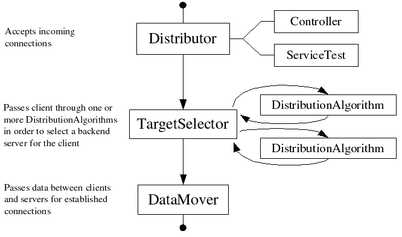

Distributor does not spawn a new thread for each connection. That type of architecture incurs a high context-switch rate (transitions between kernel and user space) as the kernel switches between threads. Instead, Distributor has a small and fairly constant number of threads to handle its various tasks. The distribution algorithms, which are responsible for selecting a back-end server for each client, use non-blocking I/O to allow handling of multiple pending connections. The bulk data transfer for established connections is also done using non-blocking I/O in the DataMover threads. Having multiple threads allows distributor to take advantage of multi-CPU systems, but limiting the number of threads to a small number avoids the context-switch problems.
Here is a list of the threads in you're likely to see in a running copy of Distributor. You can list the threads in your copy with the 'threads' command available via the controller.
And here is a diagram showing how these threads interact.
$Id$